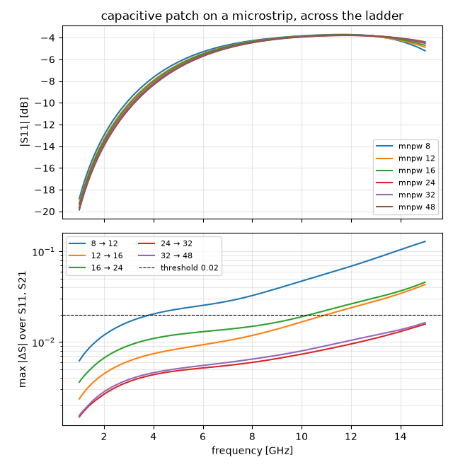
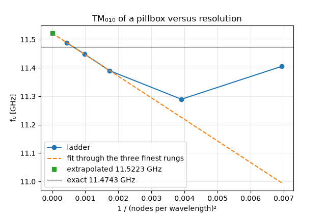

Note
Go to the end to download the full example code.
Mesh convergence: a ladder around your simulation#
Nothing inside a single run tells you how far its result is from the converged one. The instrument that does is a ladder: the same model on successively finer meshes, one number read off each rung, and a stop rule for the number. Commercial suites hide this loop behind an “adaptive mesh refinement” button; this page is the loop, written out, so it wraps around whatever you are simulating.
Three blocks. Before your simulation: one function that turns a
rung number into a MeshControl. Your simulation: unchanged,
except that it takes that MeshControl instead of a hard-coded
one. After it: record the quantity you design with, compare it
with the previous rung, stop when the change is below your tolerance
twice in a row. The first half of the page does this for
S-parameters, the second for a resonance frequency; both blocks copy
into any script.
import time
import matplotlib.pyplot as plt
import numpy as np
from scipy.special import jn_zeros
import magnelio as mio
from magnelio import geo, ports
from magnelio.constants import C0
Block 1 — before: one number drives both mesh scales#
The mesh has two knobs: min_nodes_per_wavelength sets the bulk
cell, min_cells_per_feature the cell at material interfaces. A
ladder must scale both, in a fixed ratio — a ladder over the
wavelength knob alone produces the same grid rung after rung as
long as the interface cells dominate it, then jumps. Any other
mesh setting your model needs (min_cell_size,
max_edge_refinement, …) goes in here too and stays fixed.
def rung(mnpw):
"""MeshControl for one rung: four bulk cells per interface cell."""
return mio.MeshControl(
min_nodes_per_wavelength=mnpw,
min_cells_per_feature=max(2, mnpw // 4),
)
LADDER = (8, 12, 16, 24, 32, 48)
Your simulation — wrapped in a function#
Whatever the script normally does between building the geometry
and reading the result goes into one function that takes the
MeshControl and returns the mesh and the result object. The example is a
50 Ω microstrip (the cross-section of tutorial 09, half-modelled
on its symmetry plane) with a rectangular patch widening the trace
in the middle: a shunt capacitance that reflects a good deal more
than the −30 dB termination floor of a quasi-TEM port, so the
S-parameters are the device’s, not the port’s.
h_sub, w_strip, t_strip = 0.8e-3, 1.2e-3, 0.2e-3
W_box, H_box, L = 8.0e-3, 5.0e-3, 16.0e-3
w_patch, l_patch = 4.0e-3, 3.0e-3
F_MAX = 15.0e9
fr4 = mio.Material.from_isotropic(name="FR4", epsilon=4.3)
def simulate(mesh_control):
substrate = geo.Brick(origin=(-W_box / 2, 0, 0), size=(W_box, h_sub, L), material=fr4)
air = geo.Brick(origin=(-W_box / 2, h_sub, 0), size=(W_box, H_box - h_sub, L), material="air")
strip = geo.Brick(origin=(-w_strip / 2, h_sub, 0), size=(w_strip, t_strip, L), material="pec")
patch = geo.Brick(
origin=(-w_patch / 2, h_sub, (L - l_patch) / 2),
size=(w_patch, t_strip, l_patch),
material="pec",
)
trace = strip + patch
model = mio.GeometryModel(boundary_conditions={"xmin": "SymmetryPMC"})
model.add(substrate)
model.add(air - trace)
model.add(trace)
model.add_port(ports.PortWaveguide(name="port1", plane="zmin", n_modes=1))
model.add_port(ports.PortWaveguide(name="port2", plane="zmax", n_modes=1))
mesh = mio.Mesh.from_geometry(model, mesh_control, f_max=F_MAX)
return mesh, mio.AnalysisScatteringTD(mesh=mesh, verbose=False).run(excited=["port1"])
Block 2 — after: the number and the stop rule#
Every rung has its own frequency axis, so the S-parameters are first put on one common axis. The number compared is the largest magnitude of the complex difference between two consecutive rungs, over the band and over all S-parameters you care about:
and the stop rule is: \(\Delta S\) below a threshold on two
consecutive rungs. 0.02 is the customary threshold. It is the
same scale a bench measurement lives on — 0.02 is a return-loss
uncertainty of −34 dB, or 0.17 dB on a transmission near 0 dB —
and, unlike a difference in decibels, it neither blows up at a
transmission zero nor vanishes where a curve happens to be flat.
The first rung of the passing pair is your production mesh: it
is within tolerance of the next finer one, and the rung after that
confirms the agreement was not a coincidence. converged_rung
below is that rule.
F_COMMON = np.linspace(1.0e9, F_MAX, 141)
PAIRS = [("port1", "port1"), ("port2", "port1")]
TOL = 0.02
def s_table(result):
"""Complex S-parameters of `PAIRS` on the common axis, shape (pairs, f)."""
return np.array([np.interp(F_COMMON, result.f_axis, result.S(*p)) for p in PAIRS])
def converged_rung(changes, tol):
"""Index of the first rung whose change *and* the next rung's are below tol.
``changes[k]`` is the change from rung k-1 to rung k (``nan`` for
the first rung). Returns ``None`` when the ladder never settles.
"""
ok = [c < tol for c in changes]
for k in range(len(ok) - 1):
if ok[k] and ok[k + 1]:
return k
return None
history = [] # (mnpw, S-table, ΔS to the previous rung)
print("mnpw cells time max |ΔS| max Δ|S|")
for mnpw in LADDER:
t = time.perf_counter()
mesh, result = simulate(rung(mnpw))
S = s_table(result)
cells = mesh.Nx * mesh.Ny * mesh.Nz
line = f"{mnpw:4d} {cells:6d} {time.perf_counter() - t:5.1f} s"
delta = np.nan
if history:
delta = np.abs(S - history[-1][1]).max()
delta_mag = np.abs(np.abs(S) - np.abs(history[-1][1])).max()
line += f" {delta:8.4f} {delta_mag:8.4f} {'ok' if delta < TOL else ''}"
print(line)
history.append((mnpw, S, delta))
k = converged_rung([h[2] for h in history], TOL)
if k is None:
print(f"not converged within the ladder (ΔS < {TOL} on two consecutive rungs)")
else:
print(f"converged: mnpw {history[k][0]} (ΔS < {TOL} on this rung and the next)")
mnpw cells time max |ΔS| max Δ|S|
mesh | feature planes
mesh | grid lines
mesh | materials
mesh | conformal cells
mesh | PEC masks
mesh | 11 x 17 x 15 cells
8 2805 0.8 s
mesh | feature planes
mesh | grid lines
mesh | materials
mesh | conformal cells
mesh | PEC masks
mesh | 15 x 21 x 22 cells
12 6930 1.5 s 0.1289 0.0216
mesh | feature planes
mesh | grid lines
mesh | materials
mesh | conformal cells
mesh | PEC masks
mesh | 16 x 24 x 27 cells
16 10368 2.2 s 0.0431 0.0114
mesh | feature planes
mesh | grid lines
mesh | materials
mesh | conformal cells
mesh | PEC masks
mesh | 21 x 27 x 42 cells
24 23814 4.4 s 0.0458 0.0129
mesh | feature planes
mesh | grid lines
mesh | materials
mesh | conformal cells
mesh | PEC masks
mesh | 25 x 31 x 54 cells
32 41850 8.2 s 0.0158 0.0036 ok
mesh | feature planes
mesh | grid lines
mesh | materials
mesh | conformal cells
mesh | PEC masks
mesh | 32 x 38 x 81 cells
48 98496 28.7 s 0.0164 0.0050 ok
converged: mnpw 32 (ΔS < 0.02 on this rung and the next)
The curves behind the number#
Top: the return loss of every rung on one axis — the family closes up as the ladder climbs. Bottom: \(|\Delta S|\) against frequency for each pair of rungs, with the threshold drawn in. Where the deviation sits tells you what still moves.
fig, (ax_s, ax_d) = plt.subplots(2, 1, figsize=(6.4, 6.6), sharex=True)
for mnpw, S, _ in history:
ax_s.plot(F_COMMON / 1e9, 20 * np.log10(np.abs(S[0])), label=f"mnpw {mnpw}")
ax_s.set_ylabel("|S11| [dB]")
ax_s.set_title("capacitive patch on a microstrip, across the ladder")
ax_s.grid(True, alpha=0.3)
ax_s.legend(fontsize=8)
for (m0, S0, _), (m1, S1, _) in zip(history, history[1:]):
ax_d.plot(F_COMMON / 1e9, np.abs(S1 - S0).max(axis=0), label=f"{m0} → {m1}")
ax_d.axhline(TOL, color="k", lw=0.8, ls="--", label=f"threshold {TOL}")
ax_d.set_yscale("log")
ax_d.set_xlabel("frequency [GHz]")
ax_d.set_ylabel("max |ΔS| over S11, S21")
ax_d.grid(True, alpha=0.3, which="both")
ax_d.legend(fontsize=8, ncol=2)
fig.tight_layout()

What the number sees#
Two things to know before trusting it.
The deviation grows towards the top of the band and lives in the phase of S21: the magnitude-only column of the table is several times smaller than the complex one. That is the numerical dispersion of the feed lines — 16 mm of line is one and a half wavelengths at 15 GHz, and the grid propagates a wave a little too slowly on a coarse mesh. A ladder on the bare line without the patch gives nearly the same \(\Delta S\) as this one. The complex criterion is right to count phase (a filter or a coupler depends on it), but it means that long leads to the ports set the rung, not the device. Keep the leads as short as the ports allow.
The ladder is not monotone: the deviation went up from the 12 → 16 pair to the 16 → 24 pair. On a conformal grid the error depends on where the grid lines happen to cut the trace edges and the substrate, and that changes from rung to rung. This is why the stop rule asks for two consecutive passes and not for one.
And a caveat that belongs to strongly resonant structures: a small shift of a resonance moves the S-parameters at that frequency by a lot, so \(\Delta S\) stays large long after the resonance frequency has converged to a fraction of a percent. A resonator or a narrow-band filter is judged on its frequencies — the second half of this page.
The same ladder around a resonance#
Blocks 1 and 2 again, with the number now a frequency and the stop rule its relative change. The model is a cylindrical metal cavity (pillbox), because its lowest mode has a closed form to hold the ladder against: \(f_{010} = 2.4048\,c_0 / (2\pi R)\), independent of the height. The curved wall is where the grid has to work — it is represented by the conformal sub-cell treatment of partially filled cells, not by a staircase. The ladder starts at 12 because a driven run tolerates a coarser grid than an eigenmode of a curved cavity.
R_CAV, H_CAV = 10e-3, 6e-3
F_EXACT = float(jn_zeros(0, 1)[0]) * C0 / (2 * np.pi * R_CAV)
TOL_F = 1e-2 # relative change in f0 that your specification allows
def simulate_cavity(mesh_control):
model = mio.GeometryModel(background="pec")
model.add(geo.Cylinder(origin=(0, 0, 0), radius=R_CAV, height=H_CAV, axis="z", material="air"))
mesh = mio.Mesh.from_geometry(model, mesh_control, f_max=14e9)
result = mio.AnalysisEigenmode(
mesh=mesh, n_modes=2, sigma=(2 * np.pi * 11e9) ** 2, verbose=False
).run()
return float(result.frequencies[0]), mesh.Nx * mesh.Ny * mesh.Nz
ladder_f = (12, 16, 24, 32, 48)
f0, changes = [], []
print(f"exact TM010: {F_EXACT / 1e9:.4f} GHz")
print("mnpw f0 [GHz] cells time change error")
for mnpw in ladder_f:
t = time.perf_counter()
f, cells = simulate_cavity(rung(mnpw))
change = np.nan if not f0 else abs(f - f0[-1]) / f0[-1]
print(
f"{mnpw:4d} {f / 1e9:8.4f} {cells:6d} {time.perf_counter() - t:4.1f} s "
f"{'' if not f0 else f'{change * 100:.2f} %':8s} "
f"{(f - F_EXACT) / F_EXACT * 100:+.2f} % {'ok' if change < TOL_F else ''}"
)
f0.append(f)
changes.append(change)
f0 = np.array(f0)
k = converged_rung(changes, TOL_F)
if k is None:
print(f"not converged within the ladder ({TOL_F * 100:.1f} % on two consecutive rungs)")
else:
print(
f"converged: mnpw {ladder_f[k]} at {TOL_F * 100:.1f} % — "
f"its actual error is {abs(f0[k] - F_EXACT) / F_EXACT * 100:.2f} %"
)
exact TM010: 11.4743 GHz
mnpw f0 [GHz] cells time change error
mesh | feature planes
mesh | grid lines
mesh | materials
mesh | conformal cells
mesh | PEC masks
mesh | 12 x 12 x 4 cells
12 11.4057 576 0.1 s -0.60 %
mesh | feature planes
mesh | grid lines
mesh | materials
mesh | conformal cells
mesh | PEC masks
mesh | 15 x 15 x 5 cells
16 11.2897 1125 0.1 s 1.02 % -1.61 %
mesh | feature planes
mesh | grid lines
mesh | materials
mesh | conformal cells
mesh | PEC masks
mesh | 23 x 23 x 7 cells
24 11.3901 3703 0.4 s 0.89 % -0.73 % ok
mesh | feature planes
mesh | grid lines
mesh | materials
mesh | conformal cells
mesh | PEC masks
mesh | 30 x 30 x 9 cells
32 11.4487 8100 2.2 s 0.51 % -0.22 % ok
mesh | feature planes
mesh | grid lines
mesh | materials
mesh | conformal cells
mesh | PEC masks
mesh | 45 x 45 x 14 cells
48 11.4889 28350 40.3 s 0.35 % +0.13 % ok
converged: mnpw 24 at 1.0 % — its actual error is 0.73 %
Reading the ladder — and extrapolating it#
The change between rungs against your tolerance is the criterion, as before — and here the exact value checks the rule: at a 1 % tolerance it settles on rung 24, whose actual error is 0.7 %. A resonance ladder offers one thing more: a second-order scheme converges like \(h^2\), so plotting the frequency against \(1/N^2\) (\(N\) the nodes per wavelength) gives a straight line once the mesh is in the asymptotic regime, and the intercept at \(1/N^2 \to 0\) is an estimate of the converged value. Here the exact value is known, so the plot also shows how good that estimate is — and it is a caution as much as a demonstration: the coarse rungs wobble with the way the grid lines cut the curved wall, the fine rungs approach from below and slightly overshoot, and the extrapolation lands a few tenths of a percent off. A conformal boundary carries an error component that does not scale as \(h^2\). Take the extrapolation as an estimate and the change between rungs as the criterion.
x = 1.0 / np.asarray(ladder_f, dtype=float) ** 2
slope, intercept = np.polyfit(x[-3:], f0[-3:], 1) # fit the three finest rungs
fig, ax = plt.subplots(figsize=(6.4, 4.2))
ax.plot(x, f0 / 1e9, "o-", label="ladder")
xx = np.linspace(0.0, x.max(), 50)
ax.plot(xx, (slope * xx + intercept) / 1e9, "--", label="fit through the three finest rungs")
ax.plot(0.0, intercept / 1e9, "s", label=f"extrapolated {intercept / 1e9:.4f} GHz")
ax.axhline(F_EXACT / 1e9, color="k", lw=0.8, label=f"exact {F_EXACT / 1e9:.4f} GHz")
ax.set_xlabel("1 / (nodes per wavelength)²")
ax.set_ylabel("f₀ [GHz]")
ax.set_title("TM₀₁₀ of a pillbox versus resolution")
ax.grid(True, alpha=0.3)
ax.legend()
print(
f"extrapolated f0: {intercept / 1e9:.4f} GHz ({(intercept - F_EXACT) / F_EXACT * 1e6:+.0f} ppm)"
)

extrapolated f0: 11.5223 GHz (+4184 ppm)
Two more things a resonance ladder teaches. A high-contrast dielectric body (a ceramic puck with εᵣ = 45) run through the same rungs moves by ±3 % in either direction between them — no line to extrapolate, and the spread across the rungs is the honest error of its absolute frequency. And a ratio of two results from the same mesh — a coupling coefficient from two eigenfrequencies, a Q, a relative bandwidth — converges much faster than either of them, because both carry nearly the same discretisation error. Tutorial 13 designs a filter on that basis. Run the ladder on the quantity you actually design with, and read it against that quantity’s own tolerance.
What the ladder cannot see#
A ladder finds errors that shrink with the cell size. It is blind
to a feature the grid does not contain at all: a chamfer or fillet
smaller than half a cell has no effect on the result, then appears
in one step when a rung finally resolves it — the ladder shows a
jump, not a trend. The mesher places grid planes on such edges so
the feature occupies a cell layer of its own, and warns when an edge
would need a cell finer than h_max / max_edge_refinement and is
dropped. Read those warnings before trusting a ladder; the remedy
they name (MeshControl(max_edge_refinement=...)) belongs into
rung() as a fixed setting, not into the resolution.
The flip side: a feature layer the mesher does resolve keeps its size — one cell across the chamfer, whatever the rung — so the grid is no longer refined uniformly and the \(h^2\) trend is disturbed. Run the ladder on the sharp-edged model to judge the resolution, then add the features back. The mechanism is explained under Mesh generation and conformal geometry.
plt.show()
Total running time of the script: (1 minutes 29.260 seconds)